SMU (Suburban Multiple Unit)¶
This page is under construction!! Check out SMU on Wikipedia.
The SMUs are a class of units used by QR in SEQ, manufactured between 1994 and 2011. SMUs are divided into 3 subclasses, the SMU200, SMU220, and SMU260[1]. There are only minor differences between the classes of SMUs, and they have a very similar cab design and operating procedures to other trains on the network[14].
Like all other passenger trains operating within the Brisbane Suburban Area, SMUs are fitted with AWS (Audible Warning System). When there is an upcoming restrictive signal (any signal other than green), the driver must acknowledge the warning provided for it within three seconds of its receipt by pressing a button on trains' control panels. If the approaching signal is green, no acknowledgment by the driver is required. Should a train proceed past a restrictive signal without the driver having first acknowledged the warning, the train’s emergency brakes are automatically applied to stop the train. For AWS to operate, both track and rollingstock must be equipped[15].
SMUs, along with IMUs, EMUs, and probably NGRs, are also fitted with door sensors and traction interlocks. The sensors trigger the doors to open if they detect an obstruction upon closing, much like an elevator door. Traction interlocks block power to the trains’ drive motors until all doors have fully closed preventing trains from moving with doors open or obstructed[15].
SMUs, IMUs and ICEs were supplied with rigid steel skirts that protect the wheels and undercarriage equipment. These skirts extend to within approximately 50 mm of the rails, and provide a measure of protection from damage caused by collisions with obstructions at track level[15].
Walkers/Adtranz Suburban Multiple Unit 200 series (SMU200)¶

The SMU200 as seen on QR's Carriage Layouts page
The 12 SMU200s were introduced in 1994 due to a shortage in rollingstock caused by an increase in demand[1], as well as to offset the loco-hauled SX Set run services that were slowly being phased out for health and safety reasons[2]. The trains, numbered SMU201-212, entered service on the 16th of August 1994 and were the first new trains since EMU deliveries ended in 1989[1].
The units used modern GTO (gate turn-off) thyristor traction control systems[8] (EMUs also used thyristor TCS's), with the units set up similar to the EMUs with a Driver-Motor, Motor, and Driver Trailer cars. They use blower for cooling both the traction equipment and braking grids, and although the EMUs are quite louder with their high-pitch traction motors, the SMU200s (and IMU100s) are known to be quite loud on take-off due to their blowers winding up. Although when running they are very quiet and have the typical gear switching sound of a thyristor control system[2].
Train drivers also have access to full computerized information about the performance of the train[8].
The SMU200s are commonly mixed with SMU220 class to make up 6-car trains, however as they use the Scharfenburg coupler they can be coupled to EMUs, IMUs, ICE sets, and Tilt Trains for haulage purposes only as they are not 100% electrically compatible[2]. It appears that they used to be paired with IMU100/120s, but they stopped doing it in about 2014[13]. Allegedly, "the brakes are quite different so they always felt rough as guts when they stopped"[12]. They were also paired with EMUs early on, but after a derailment between Central and Roma Street (leaving the old tunnels towards Platform 7) they put a stop to it[12].
The SMU200s were fitted with the Digital Voice Announcement System, which inform the passengers of the route and next station over the Public Address system, from their manufacturing, while the EMUs were only fitted with it later[4]. They also featured new Passenger Emergency Intercoms, which were also added to the EMUs later[8].
Specs¶
| Spec | Value |
|---|---|
| Manufacturer | Walkers Ltd. Maryborough/ABB Transportation, Switzerland[4] |
| Gauge | Narrow Gauge (1,067mm or 3' 6")[4] |
| Length when Coupled | 72,422mm[4] |
| Bogie Centres | 17,000mm[4] |
| Bogie Wheelbase | 2,500mm[4] |
| Wheel Diameter | 840mm[4] |
| Width | 2,720mm[4] |
| Height over Roofline | 3,872mm[4] |
| Height of Floor | 1,100mm[4] |
| Road numbers | DM5201–12, M6201–12, DT8201–12[3] |
| Maximum speed | 100km/h[1] |
| Traction Rating | 8 x 180 kW[4] |
| Maximum Acceleration | .8m/s2 [4] |
| Maximum Service Brake | 1.15m/s2 [4] |
| Weight | 45,020 kg (DM / driving motor car); 46,130 kg (M / non-driving motor car); 35,020 kg (DT / driving trailer car)[4] |
| Length | 23.5 m (DM / driving motor car, DT); 23.1 (M / non-driving motor car)[3] |
| Seats | 76 (DM / driving motor car, DT / driving trailer car); 88 (M / non-driving motor car)[3] |
| Total Service Capacity (3car) | 500[6] |
| Traction System | ABB MICAS-S2 GTO-VVVF[1] |
| Traction Motor Control | One GTO Thyristor converter per 8 asynchronous AC traction motors using three phase variable voltage/variable frequency (VVVF) technology[4] |
| Transmission | Bogie suspended traction motor through cardan shaft to right angle axle gear drive unit[4] |
| Gear Ratio | 1:5.169[4] |
| Braking System | Regenerative electric and electropneumatic thread brake[4] |
| Auxiliary System | 2 x 100 kVA three phase static converters[4] |
| Climate Control | 2 x roof mounted air conditioners per car each with 30 kW cooling capacity[4] |
Timeline¶
- August 16, 1994: First SMU200 entered service[1].
- 2017: IMU100s and SMU200s underwent an overhaul, including an upgrade of the traction package and Train Control Management System on 10 IMU100s and 12 SMU200s, and one of the pneumatic cab doors of an IMU100 got upgraded. This work was done by Downer EDI Rail for $105,430,828[10].
- December 2018: Downer awarded an $80 million contract to overhaul the IMU100s and SMU200s to be completed at Downer’s Maryborough Service Delivery Centre[5], including:
- Interior refresh – new floor coverings, refreshed handrails and grab handles and new seat foams and covers for enhanced customer experience
- Overhaul of key train subsystems to ensure the safety and reliability of the fleet
- New electrical systems (in partnership with ABB), including upgrade of onboard traction equipment and installation of a new Train Control Management System (TCMS).
- January 17, 2020: QR paid out $2.6 million to CoachAir for
"2019 IMU100 SMU200 HVAC Overhaul", possibly as part of Downer's refurbishment that started Dec 2018[11]. - 2023: QR replaced the routers in EMUs, IMU100s, SMU200s, IMU120s, and SMU220s. The work was contracted out to Nomad Digital and cost $1.75 million[11].
- 2023: Downer's SMU200 overhaul completed[5].
- December 5, 2023: Noske-Kaeser New Zealand awarded a contract to complete 10 Year Overhauls on IMU100s and SMU200s, including these replacements[7]:
- Compressors and various refrigeration components
- The PLC and switching gear
- Safety devices such as pressure transducers and heaters overtemperature switches
- Heaters, fans, insulation on covers
- [add new?] Circuit breakers to address obsolescence of existing breakers and compliance with MD-10-125
- 2036: SMU200s anticipated to commence retirement (as of August 2021)[9].
Carriage Layout (Design A)¶
Carriage 1¶
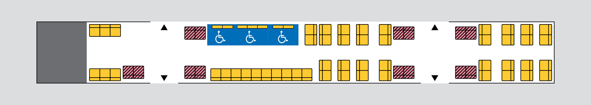
Carriage 2¶
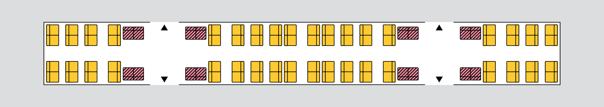
Carriage 3¶
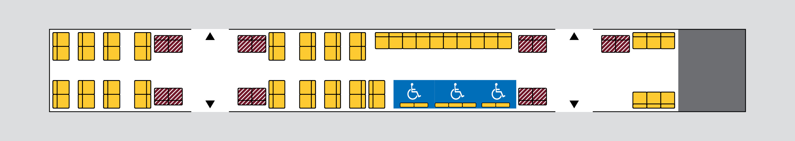
Carriage Layout (Design B)¶
May also be SMU220, but I can't tell the difference.
Source archived here - see figure A1
Carriage 1¶

Carriage 2¶

Carriage 3¶

EDI/Bombardier Suburban Multiple Unit 220 series (SMU220)¶
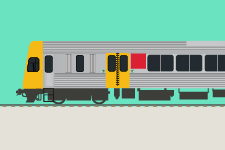
The SMU220 as seen on QR's Carriage Layouts page
Note: A lot of this information is from the report "Construction of 30 CityTrain Carriages". You can read it here.
In June 1996, QR made an investment submission to Queensland Transport (QT), recommending the government to purchase 30 x 3 car sets of rollingstock to operate a safe, efficient, and reliable rail service until 2002/2003. The purpose of purchasing the additional rollingstock was fourfold[16]:
- Firstly, it would help QR play its part in achieving the state government’s objective of increasing public transport usage by 50% by 2011. This was a bold objective as public transport usage was decreasing.
- Secondly, QR would use twelve of the three car sets to cater for the continuing increase in rail patronage, particularly during peak hours. Rail patronage grew from 37 million passengers in 1994-95 to 41.5 million passengers in 1997-98. QR anticipated that patronage for Citytrain services would increase to 47.5 million passengers by 2002-2003.
The twelve three car sets would be configured as six, six car trains. Two of these trains would operate on the Caboolture line, two on the Beenleigh line and two on the Ipswich line. With the introduction of the tilt trains in November 1998, three of the five car ICE (Inter-City Express) trains would be available for the Sunshine Coast to Brisbane line.
- Thirdly, QR would use fourteen of the new three car sets to replace the inferior silver SX rollingstock which it still used on peak hour Citytrain services. SX carriages were not electrified, were slower than the new rollingstock, have doors and windows which were difficult to open, inferior seating, and were drawn by diesel locomotives which produce more noise and air pollution than the new locomotives. They were also not well patronised as rail passengers usually prefer to wait for an electrified train.
- Finally, four of the new three car sets would allow QR to reduce utilisation levels of its rollingstock. At the time, QR used about 98% of its rollingstock during peak periods. This made it difficult for QR to carry out preventative maintenance on its fleet which adversely impacted on the reliability and longevity of the rollingstock. Benchmarking studies showed that optimal utilisation of rollingstock is 87% to 91%. With the new rollingstock QR aimed to reduce its utilisation level to 94%. QR advised that it can provide sustainable and reliable services at a level of 94%[16].
There were some concerns on whether thirty sets is sufficient to meet the Integrated Regional Transport Plan (IRTP) objective of increasing public transport usage by 50% by 2011. QR stated that the additional rollingstock would enable it to meet anticipated patronage up to 2003 but is inadequate to meet the increased service frequencies recommended in the IRTP. The IRTP stated that the "long-term minimum services level targets" were [16]:
- a train travelling through the inner city every 7.5 minutes during peak periods and every 15 minutes during off-peak
- a train travelling to outer suburban and coastal areas every 15 minutes during peak periods and every 30 minutes during off-peak. This level of service should start to occur from 2001.
At the time, QR provided[16]:
- a train travelling through the inner city every 5-10 minutes during peak periods and every 15 minutes during off-peak
- a train travelling to outer suburban and coastal areas, on average, every 24 minutes during peak periods and, on average, every 46 minutes during off peak
In September 1996, QR commenced negotiations with Walkers to construct 12 x 3 car SMU220 sets on the understanding that they would only have funding for 12, not 30, sets. They approached Walkers because of their proven track record, 20 year history of constructing rollingstock for QR and design expertise as exemplified in the design and construction of the tilt trains. Walkers also won the contract to construct twelve SMUs and ten IMUs in 1991 bidding only against Goninans[16].
QR decided not to go to tender reasoning that a twelve SMU package would be too small for a new supplier to effectively compete against an established supplier (Walkers). Furthermore, QR had a benchmark cost for the construction of SMU200s from 1991 and required Walkers to reduce that cost. As a Government Owned Corporation, QR is not subject to the provisions of the State Purchasing Policy[16].
QR also chose Adtranz Australia to work with Walkers over GEC-Alsthom. This was done for three reasons: Walkers and Adtranz have worked together before (eg. on the tilt trains); Adtranz provided a better price and contractual issues such as product warranty and reliability guarantees[16].
With the acquistion of new rollingstock, QR aimed to[16]:
- take advantage of the recent significant advances in traction technology
- refine the current design for SMUs by building a much higher level of performance and reliability into their trains
- achieve a reduction in the capital cost per unit.
To keep the auxiliary converters (and systems) online through neutral sections 220’s and 120’s automatically apply a small amount of regenerative braking when traversing neutral sections at speeds above 20km/h. This reduces the need to rely on the battery system and is why they maintain full lighting and air conditioning compared to other units in the fleet.
For some reason at speeds around 40-60km/h they can produce a rather nasty shudder through the train. As a driver there isn’t much that can be done to prevent it. Some do it, some don’t, some are worse than others. Just a quirk of the units. Source: https://www.reddit.com/r/BrisbaneTrains/comments/1hikjzi/comment/m321aky
SMU222, along with another unit, is usually used for driver training.
Source: https://www.reddit.com/r/brisbane/comments/k0hqc3/comment/gdijsfo
SMU232 was installed with new white destination boards that are going to be used on the QTMPs[24]. It was seen testing them by jrvh31 (flickr) on the 25th of May, and I also spotted it on June the 2nd:
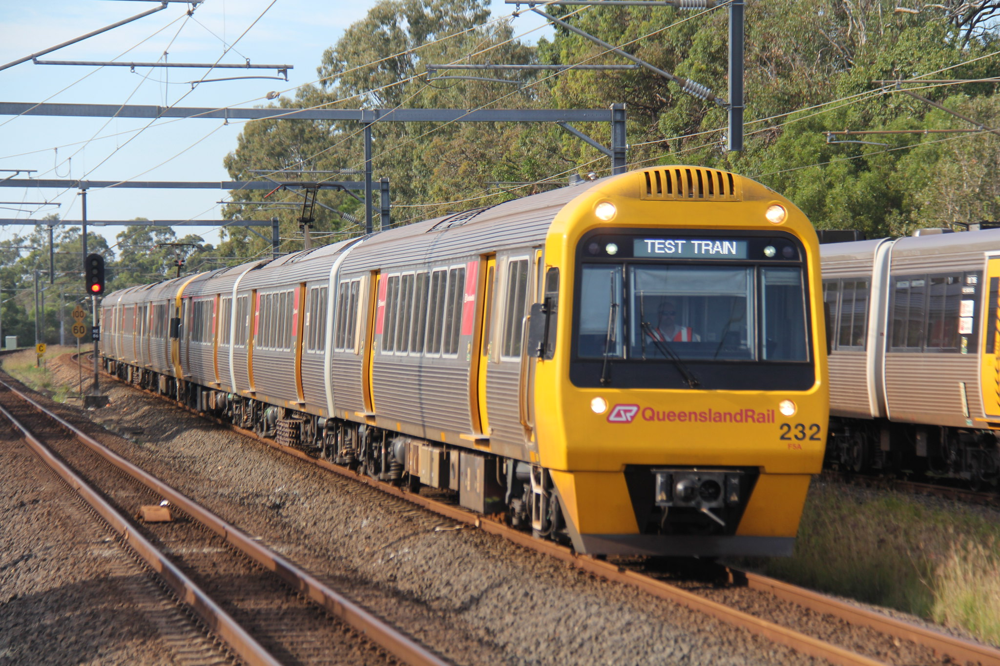
SMU232/225 running a test train approaching Sunshine. This unit is testing new destination boards that will be seen on QR’s new QTMP Multiple Units. All rights reserved by jrvh31
These units had several benefits compared to the EMUs[16]:
- Air conditioning units are positioned in the roof in the centre of each carriage rather than on the sides. This decreases condensation on the windows and failure due to humidity.
- The rollingstock features an improved traction package which includes a driver monitoring system. A computer near the driver gives a graphic display of the train functions and notifies the driver when there is a fault, the location of the fault and the rectification procedure, where possible.
- All carriages have CCTV security cameras installed. A QR guard can monitor activities in the carriages as the cameras are linked to a display system which scrolls through screens showing each carriage.
- The seats have new arms which are more difficult for vandals to break off. Other anti-vandalism measures already incorporated into most rollingstock are carpet up the side walls to the windows, the security cameras and retention of a guard on each train.
- The new rollingstock has more rotatable parts which increases the speed of maintenance and repairs.
SMU220s do not have toilets or luggage compartments. At the time of ordering, QR maintained that toilets are not necessary on suburban trains as the average trip length is 19 kilometres and toilets are provided at most stations[16].
Timeline¶
- June 1996: QR's Investment Submission to QT recommended that the government provide funds to purchase 30 x 3 car sets of rollingstock to provide a safe, efficient and reliable rail service for south east Queensland until 2002/2003. QR argued that a contract of this size would attract tenders from Walkers in Maryborough and Goninans in Newcastle, thereby providing the government with a very competitive price[16].
- September 1996: QR commenced negotiations with Walkers to construct 12 x 3 car sets on the understanding that they would only have funding for 12 and not 30, 3 car sets[16].
- 1997: Following the adoption of the IRTP objectives and the finalisation of the state budget, QR received funding firstly for 18 x 3 car sets and then for an additional 12 x 3 car sets. It awarded contracts to Walkers as follows:
- 18 x 3 car sets awarded 30 April 1997. Base contract price: $134,812,830. Price per 3 car set: $7,489,601
- 12 x 3 car sets awarded 4 June 1997. Base contract price: $81,521,190. Price per 3 car set: $6,793,432
- The price per car set differs between the two contracts because the first contract contains payment for design work and extra spare parts. The then Coalition state government endorsed both contracts prior to them being issued to Walkers[16].
- 2038: SMU220s anticipated to commence retirement (as of August 2021)[9].
Carriage Layout¶
Carriage 1¶
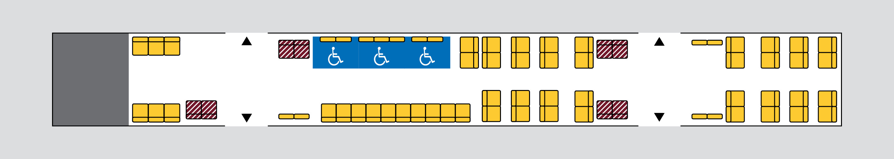
Carriage 2¶
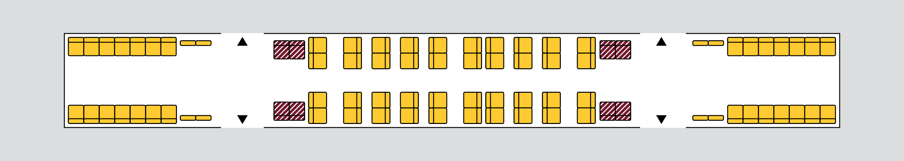
Carriage 3¶
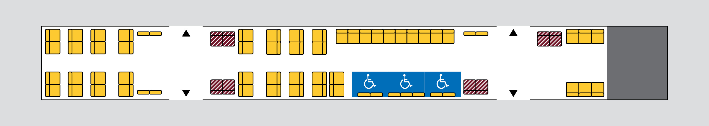
EDI/Bombardier Suburban Multiple Unit 260 series (SMU260)¶
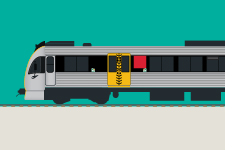
The SMU260 as seen on QR's Carriage Layouts page
The early-mid 2000s was a period of substantial demographic and economic expansion in SEQ. Between 2004 and 2006, public transport trips increased 9.7% and 11.6% respectively year-over-year. This growth was propelled by several factors, including the introduction of integrated fares and ticketing in 2004 and progressive improvements to service levels[17]. Projections from the time also indicated a significant 57% rise in employment within the Brisbane CBD from 2006 to 2026[18].
The need was recognized by QR, and in 2005 they ordered eight SMU260s from Downer EDI Rail to cater for this increase in demand[21]. The SMU260 series was specifically introduced as a "congestion-busting fleet," designed to provide a substantial increase in the number of available seats for commuters[19]. The first two units, SMU261-262, official entered service in August of 2008, and were observed operating Ekka shuttle services on August 11, 2008[21].
In March 2009, a further 20 trains were ordered, scheduled for delivery between August 2010 and December 2011[20].
Note: Somehow, there is a large discrepancy in the timeline as, even though I've only found evidence for the order of 8 trains in 2005 and 20 more in 2009 (or perhaps 14, according to wuiskemodels[21]), in total 36 trains were delivered. Perhaps there was another order in the middle or something.
The SMU260 operates as a permanently-coupled 3-car set, with two sets often coupled together to form a 6-car train for increased capacity and redundancy[23] (operating as a 6-car set is is the preferred business operating model[22]).
Timeline¶
- 2050: SMU260s anticipated to commence retirement (as of August 2021)[9].
Carriage Layout¶
Carriage 1¶
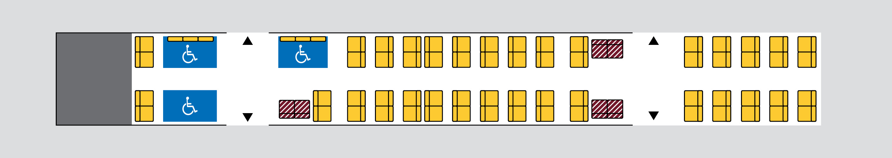
Carriage 2¶
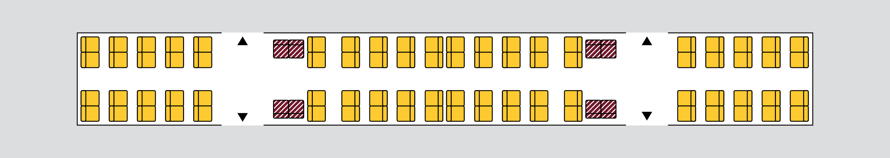
Carriage 3¶
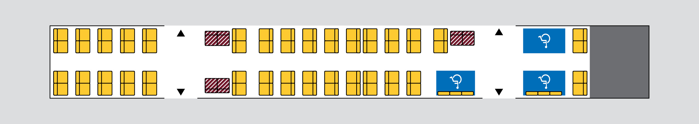
Gallery¶
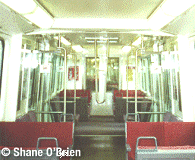
The original interior of an SMU200. Copyright Shane O'Brien. Seen on: QROTI - Travel Information - Fleet - SMU (archived from the original).
{kind=link}
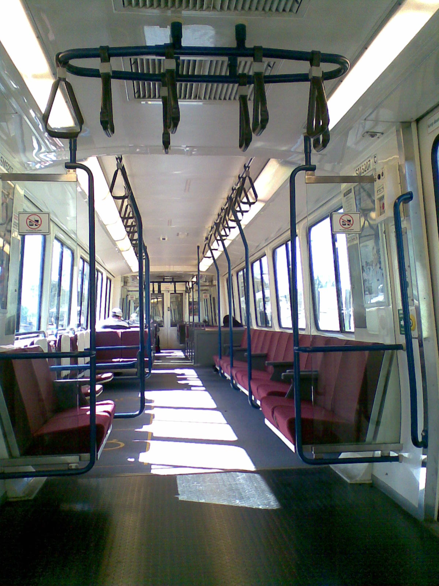
The interior of a Queensland Rail SMU 200 series unit. Taken May 18, 2008 by Ash Kyd. This was the old style, before QR refurbished them. Source.
{kind=link}
There may also be other photos in the Gallery
Sources¶
- [1] https://en.wikipedia.org/wiki/Suburban_multiple_unit
- [2] https://qrig.org/motive-power/self-propelled-passenger-stock/electric-multiple-units/walkersadtranz-suburban-multiple-unit-200-series-smu200
- [3] https://www.railtram.com.au/smu-suburban-multiple-unit-200
- [4] http://www.railpage.org.au/qrhistory/html/locomotives/electrics/smu.htm
- [5] https://www.downergroup.com/downer-secures-80-million-queensland-rail-con
- [6] https://queensland-trains.fandom.com/wiki/SEQ_Network_Fleet
- [7] https://qtenders.epw.qld.gov.au/qtenders/contract/view.do?CSRFNONCE=376F38EAD88F3EB9E36E5CC47D8CB634&tenderId=48267
- [8] QROTI - Travel Information - Fleet - SMU archived from the original.
- [9] Question on Notice No. 913 - August 31 2021: https://documents.parliament.qld.gov.au/tableoffice/questionsanswers/2021/913-2021.pdf archived here
- [10] https://www.data.qld.gov.au/dataset/queensland-rail-contract-disclosure-fy2022-2023/resource/d135ec7d-4a7a-40b2-98e4-3df90365f374 archived here
- [11] https://www.data.qld.gov.au/dataset/queensland-rail-contract-disclosure-fy2023-2024/resource/22563422-0ea2-4bb0-80fb-a0428afc6365 archived here
- [12] https://web.archive.org/web/20220319105847/https://www.reddit.com/r/brisbane/comments/tgrjny/comment/i19m44u/ archived from the original
- [13] https://web.archive.org/web/20220318053602/https://www.reddit.com/r/brisbane/comments/tgrjny/comment/i14bmsr/ archived from the original
- [14] https://documents.parliament.qld.gov.au/com/IPNRC-C217/C20172018-A745/qon-est-19Jul2017No4-Transport.pdf
- [15] https://documents.parliament.qld.gov.au/committees/TSAFE/pre1999/tsafe23.pdf
- [16] https://www.parliament.qld.gov.au/Work-of-the-Assembly/Tabled-Papers/docs/4998t948a/4998t948a.pdf
- [17] https://thredbo-conference-series.org/downloads/thredbo10_papers/thredbo10-themeA-Streeting-Barlow.pdf
- [18] https://australasiantransportresearchforum.org.au/wp-content/uploads/2022/03/2009_Bitzios_Dennis_Grodum.pdf
- [19] https://statements.qld.gov.au/statements/52425
- [20] http://www.railway-technology.com/news/news51072.html archived here
- [21] https://www.wuiskemodels.com/prototype/index.php?sfpg=MDA1LS1FTEVDVFJJQyBTVUJVUkJBTiBTRVRTL1NNVSAyNjAgU0VSSUVTLyoqKioqODcwNGUwNjU3OTkyNzgxOGZmNzRhMzkxNzU2MWEzOTY archived here
- [22] https://www.atsb.gov.au/sites/default/files/media/5781009/ro-2019-009-final-1.pdf
- [23] https://www.queenslandrail.com.au/forcustomers/accessibility/our-trains/smu-260
- [24] https://www.flickr.com/photos/201254799@N04/54557160080/